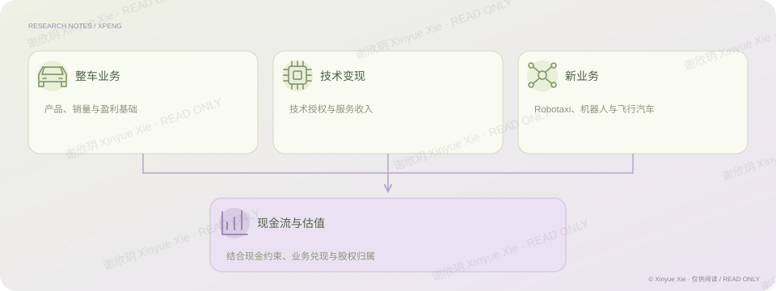

公司研究 · 26 页
小鹏汽车：超越整车的价值
技术优势怎样转化为利润与股东价值？
PROJECT NOTES / THE BIG PICTURE
研究思路

01核心判断
小鹏的研究不能停留在技术领先或销量增长上。我把整车业务、技术服务和新业务分别放回各自的盈利与现金流条件中分析：整车需要检验产品结构和毛利率，技术服务需要区分项目收入与可持续收入，机器人等新业务则需要核对商业化阶段、实际持股与融资稀释。估值部分用现金流模型和分业务估值相互核对，关注技术优势在什么条件下才能转化为上市公司股东可获得的价值。
02分析过程
从行业需求和产品位置开始，区分销量的短期驱动与技术能力的长期兑现，避免把技术领先直接等同于商业成功。 拆开利润来源，检查整车与高毛利技术服务各自的贡献，以及项目收入能否持续。 对新业务分别判断商业化、资金需求和实际权益，不把技术共用理解成商业化同步，也不直接把全部业务估值相加。 以一致的口径连接经营假设、现金流和分部估值，最后列出需要持续跟踪的验证条件。
03关键证据
报告做了一个条件情景：整车毛利率不变时，技术服务收入占比从 13.7% 降到 8%，综合毛利率约从 20.7% 降至 17.1%。这个差异说明，高毛利服务收入的持续性会明显影响对盈利质量的判断，不能只看整车销量。见原报告第 18–19 页；这是原报告的情景分析，并非本轮更新后的业绩预测。
相关经历公司研究作品
理解商业
区分整车、技术服务和新业务各自的盈利条件。
建立模型
把现金流、业务边界和实际权益放进估值。
检验证据
用服务收入占比的条件情景，检验综合毛利率判断。
谢欣玥 Xinyue Xie · 研究作品仅供在线阅读
← 返回全部作品